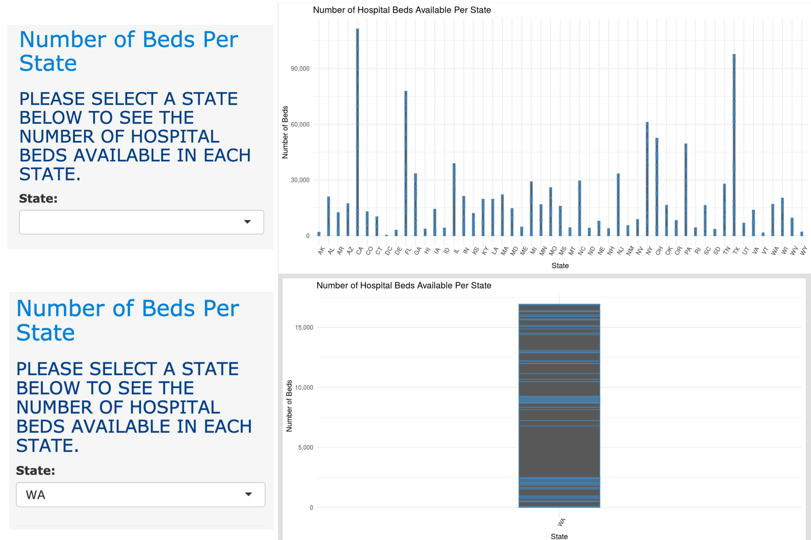

Madison Colvin
Interactive Web Application
COVID-19 Data Visualization
Overview
In my Technical Foundations of Informatics course we were placed in teams of four and tasked with exploring a dataset and creating an interactive web application using R to communicate our insights. Our team chose to explore a COVID-19 dataset, specifically focusing on hospital bed capacity in the US in relation to COVID-19 cases.
Exploring COVID-19 Data Across the United States
The importance of healthcare is extremely relevant in our current day-to-day lives. Being able to visualize this data will create a greater understanding of our need for healthcare and current issues in the medical field. Through research and analyzing our chosen datasets, we aimed to explore the current relationship between the number of COVID-19 cases in the US and the current number of hospital beds available. We hoped to gain important insights and intel about the current state of hospital capacity across the US in order to get a better understanding of the widespread impact of COVID-19. The following visualizations were created in effort to guide future estimates of the number of hospital beds needed during a global pandemic.
One of the main datasets that our group looked at contained data about existing hospital capacities across the US. This dataset was organized by state and county, showing the amount of beds that are available in each county. In addition, the dataset listed which types of facilities beds were available in, the county’s population, and the year that the bed data was collected.
Major Questions To Explore
The main questions we hope to explore were: How can we use COVID-19 data to better prepare for a future pandemic? By exploring a variety of COVID-19 datasets and cross-analyzing the information presented in each dataset, we hoped to determine which resources we were lacking and provide insightful recommendations to help better prepare for a future pandemic. The following list of questions helped guide our recommendations:
- Are there enough beds to match the total number of COVID-19 cases in each state?
- Which states had the most hospital beds and which had the least?
- Are there enough beds to match the total number of COVID-19 cases in each state?
By answering the list of questions above, we aimed to get an insightful and meaningful answer to our overarching question: How can we use COVID-19 data to better prepare for a future pandemic?
Number of COVID-19 Cases
The plot was included to show the growth trend of COVID-19 of the state with the closest number of beds. When the slide bar is adjusted, the plot will automatically find the state with the closest bed count and display the number of COVID-19 cases, this way user can see intutively what is the 'best' number of beds to control the current state of the pandemic.

Number of Hospital Beds Available by State
This chart was created to show the relationship between each state and the total number of hospital beds available. This data visualization allows the viewer to clearly interpret the presented data and pinpoint which states have the highest volume of hospital beds available.
Bed Distribution
This bar chart demonstrates the relationship between each state's number of hospital beds and the facility type. This piece of data gives the user insight into how hospital beds are distributed. Users could choose a state from the drop down menu to see the distribution of beds among different facility types.
Hospital Beds in the US
This map demonstrated the relationship between each state and the amount of hospital beds available. The user could hover over the map to view information about the state, county, facility, population, and see the number of beds available.
Data Table
The following table shows the number of beds available in each state in the US by facility type. The facilities with the most beds available were acute facilities. Even though acute facilities had the most number of beds available, acute care is known to be for short term and non life threatening hospital stays. Due to this, acute facilities may not be able to provide the same level of care as facilities like the ICU.
Conclusion
From examining these charts and maps, we gathered that not every state could not provide the same level of care. For short-term care, acute facilities had the most available beds but in the case of COVID-19, with many people getting infected, these facilities filled up fast. By comparing the number of confirmed cases in the US and the number of available beds in the US, we found that there were not nearly enough beds available to help every infected patient. Even states that were considered to be a COVID-19 epicenters didn't have enough beds to provide care for all infected patients. After analyzing these charts and data, visualizations it's clear that, in order to better prepare for a potential future pandemic, there will need to be an increase in available hospital beds across the US.